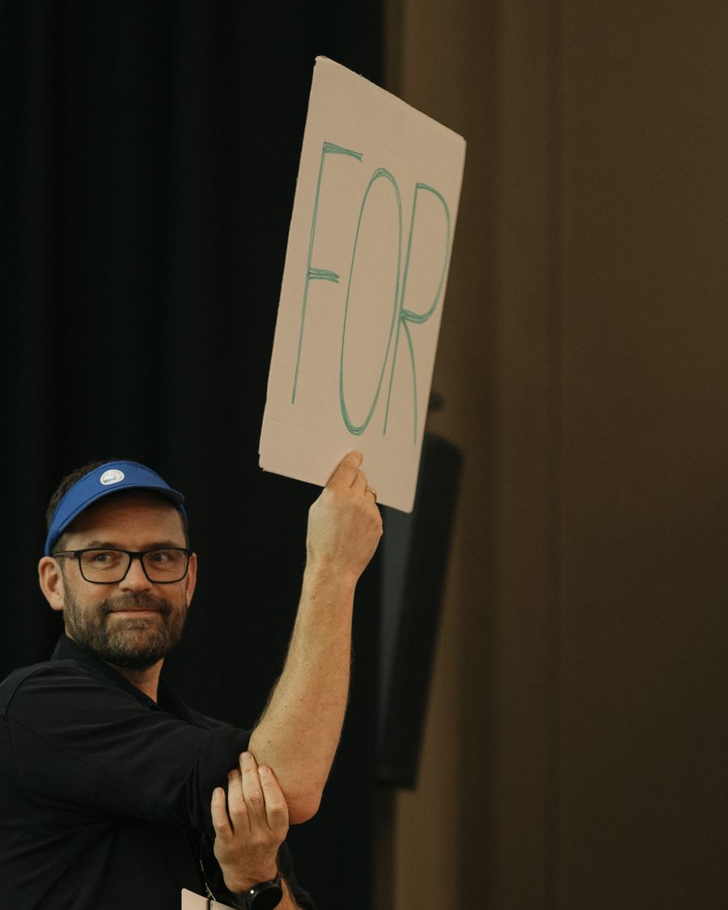

What are the best methods for participation?
Do you know a democratic innovation or participation method that should be shared with others? We are curious to learn about your best practices. Share them with us, the Nordic Deliberation Network and the Nordic Council of Ministers.
From your method to a Nordic overview
We want to learn from the people who make participation happen across the Nordic region, and share what works.
- You
Share your method
Tell us about a method you use or know about. The form takes a few minutes.
- Project team
We map and analyse
The methods are collected and analysed together with partners across the Nordic region.
- Youth groups
Tested with youth
One method is tested with youth groups in Norway, Denmark and Finland.
- Everyone
Shared with the Nordics
The methods and findings are shared openly with a Nordic community.
Participation is booming. But what do we know about the impact?
Citizen assemblies, listening campaigns, capacity-building programmes, digital dialogue platforms: municipalities, governments, organisations, individuals and civil society across the Nordics are experimenting with new ways to involve people in democracy.
But the experimentation is growing faster than our shared understanding. There is no shared overview, and no shared language for talking about democratic impact and whether a method can travel from one context to another.
The project uses the Democratic Impact model to compare methods. It looks at impact on three levels: the individual, the system and the process.
Model: Democratic Impact, developed by We Do Democracy with Analyse & Tal, TrygFonden and the University of Copenhagen
Select a dimension
Young people shape what works
Young people often face barriers to participation, and they are key to the future of Nordic democracy. We will test one method collected with youth groups, and ask young people how they want to be heard and involved.

Their experiences and recommendations feed directly into the project's findings, giving a Nordic youth perspective on the methods collected.
What works? Mapping, testing and scaling participatory methods in the Nordic region
Together, SoCentral, We Do Democracy and Sitra have set out to map participatory methods, practitioners and the impact they intend to create, and to test and compare participatory methods across the region.
Our ambition is to help the Nordic region move from many valuable participation experiments to a shared capacity for understanding, comparing and scaling what works.